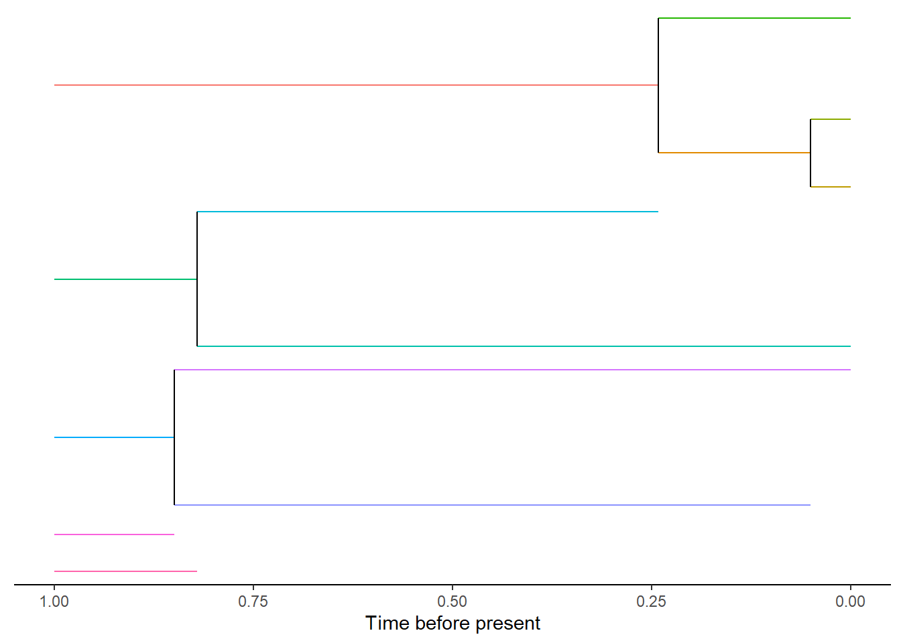

3 Simulation data visualisation
In the previous section (Section 2) it showed how the data is simulated. An important aspect is to see the data and DAISIEmainland
has a selection of plotting functions to plot the phylogenetic data of the
mainland and the island.
3.1 Visualise mainland
We simulate the same mainland system as (Section 2.1) and then plot the all the mainland clades using plot_mainland.
set.seed(
1,
kind = "Mersenne-Twister",
normal.kind = "Inversion",
sample.kind = "Rejection"
)
mainland <- DAISIEmainland:::sim_mainland(
total_time = 1,
m = 5,
mainland_ex = 1
)
DAISIEmainland::plot_mainland(mainland)
The above plot shows the evolutionary history of each mainland species from the start of the simulation, as five independent (i.e. no phylogenetic relatedness) mainland species, to five extant species at the present. Each species is given as unique species ID which are shown here as different coloured branches. The colours can also be changed to represent the clade a species belongs to.
DAISIEmainland::plot_mainland(mainland, branch_colour = "clade_id")
If there are many clades on the mainland it can be difficult to see when plotted
as an entire community. Instead individual mainland clades can be selected from
the data and plotted with plot_mainland_clade. Again the option of plotting
the unique species ID or clade ID are available.
DAISIEmainland::plot_mainland_clade(
mainland_clade = mainland[[1]],
branch_colour = "unique_species_id"
)
DAISIEmainland::plot_mainland_clade(
mainland_clade = mainland[[1]],
branch_colour = "clade_id"
)

3.2 Visualise island
The same set of plotting functionality exists for the island data. Here we
simulate a range of possible outcomes for the island data and show how each
looks using the function plot_daisie_data.
- An empty island
- An island with a single non-endemic species

- An island with a single endemic species

- An island with a single non-endemic species which whose colonisation time
is older than the island age so it is considered an island-age colonisation
(i.e. it colonised at the island age because it could not have colonised
before). This uncertainty in the timing of colonisation is then taken into
account when the data is input into the
DAISIElikelihood model.

- An island with a single endemic species which whose colonisation time is older than the island age so it is considered an island-age colonisation. The uncertainty in colonisation time is handled in an equivalent way to the non-endemic island-age colonisation.

set.seed(
1,
kind = "Mersenne-Twister",
normal.kind = "Inversion",
sample.kind = "Rejection"
)
daisie_mainland_data <- sim_island_with_mainland(
total_time = 1,
m = 5,
island_pars = c(1, 1, 10, 1, 1),
mainland_ex = 1,
mainland_sample_prob = 1,
mainland_sample_type = "unsampled",
replicates = 1
)
daisie_mainland_data
#> $ideal_multi_daisie_data
#> $ideal_multi_daisie_data[[1]]
#> $ideal_multi_daisie_data[[1]][[1]]
#> $ideal_multi_daisie_data[[1]][[1]]$island_age
#> [1] 1
#>
#> $ideal_multi_daisie_data[[1]][[1]]$not_present
#> [1] 3
#>
#>
#> $ideal_multi_daisie_data[[1]][[2]]
#> $ideal_multi_daisie_data[[1]][[2]]$branching_times
#> [1] 1.0000000 0.1026008
#>
#> $ideal_multi_daisie_data[[1]][[2]]$stac
#> [1] 2
#>
#> $ideal_multi_daisie_data[[1]][[2]]$missing_species
#> [1] 0
#>
#>
#> $ideal_multi_daisie_data[[1]][[3]]
#> $ideal_multi_daisie_data[[1]][[3]]$branching_times
#> [1] 1.0000000 0.9627315
#>
#> $ideal_multi_daisie_data[[1]][[3]]$stac
#> [1] 2
#>
#> $ideal_multi_daisie_data[[1]][[3]]$missing_species
#> [1] 0
#>
#>
#>
#>
#> $empirical_multi_daisie_data
#> $empirical_multi_daisie_data[[1]]
#> $empirical_multi_daisie_data[[1]][[1]]
#> $empirical_multi_daisie_data[[1]][[1]]$island_age
#> [1] 1
#>
#> $empirical_multi_daisie_data[[1]][[1]]$not_present
#> [1] 3
#>
#>
#> $empirical_multi_daisie_data[[1]][[2]]
#> $empirical_multi_daisie_data[[1]][[2]]$branching_times
#> [1] 1.0000000 0.8489636
#>
#> $empirical_multi_daisie_data[[1]][[2]]$stac
#> [1] 2
#>
#> $empirical_multi_daisie_data[[1]][[2]]$missing_species
#> [1] 0
#>
#>
#> $empirical_multi_daisie_data[[1]][[3]]
#> $empirical_multi_daisie_data[[1]][[3]]$branching_times
#> [1] 1.00000 0.99999
#>
#> $empirical_multi_daisie_data[[1]][[3]]$stac
#> [1] 5
#>
#> $empirical_multi_daisie_data[[1]][[3]]$missing_species
#> [1] 0
plot_daisie_mainland_data(
daisie_mainland_data,
replicate_index = 1
)